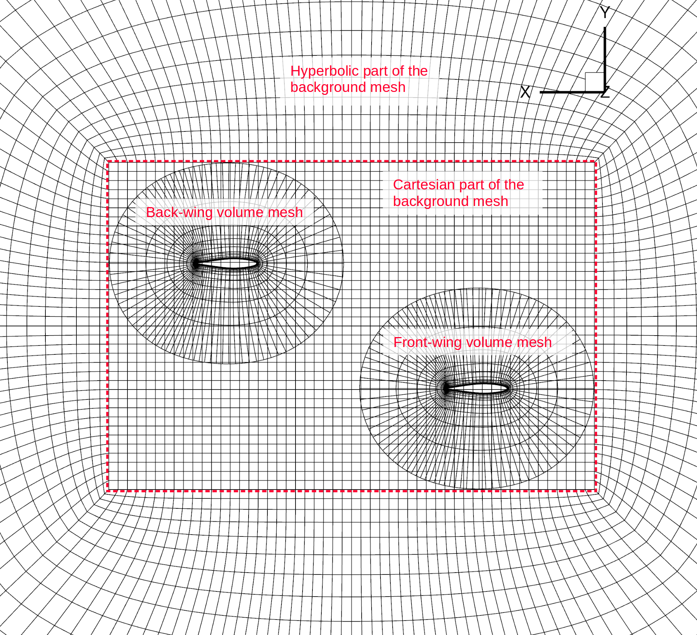

Volume Meshing
Introduction
- The objectives of this section are to:
generate two separate volume meshes for the front and back wings,
generate a background mesh, and
combine them.
Here is a view of the symmetry plane (looking in the positive-z direction) for the overset mesh that we want to end up with in this section.
{kind=link}
Once we generate the three meshes, all we need to do is combine them into one CGNS file, and ADflow will take care of the connectivities, interpolation, blanking, and flooding using an implicit hole-cutting algorithm (when we run an analysis or optimization).
Note
TODO: Need to add more background information on overset meshes. In the meantime, see the overset.pdf slides in MACHtutorial/tutorial/oversetopt/.
Files
Navigate to the directory oversetopt/mesh/volume in your tutorial folder.
Copy the following files from the surface meshing directory:
$ cp ../surface/wing.cgns .
Create the following empty runscript in the current directory:
run_pyhyp.py
The pyHyp runscript
Open the file run_pyhyp.py with your favorite text editor.
Then copy the code from each of the following sections into this file.
Import libraries
from pyhyp import pyHyp
Options for the front wing
# Front wing vol mesh
options_front = {
# ---------------------------
# General options
# ---------------------------
"inputFile": "wing.cgns",
"fileType": "CGNS",
"unattachedEdgesAreSymmetry": True,
"outerFaceBC": "overset",
"autoConnect": True,
"BC": {},
"families": "wing_front",
Here a few options that are different from the options used earlier in the Volume Meshing tutorial are the outerFaceBC and families options.
Instead of using a farfield boundary condition, we set the outerFaceBC to overset.
Since we have two wings, we also want to give them different family names that can be used to distinguish between them later for options such as outputting lift distributions from ADflow.
Next we specify some grid parameters.
# ---------------------------
# Grid Parameters
# ---------------------------
"N": 33,
"s0": 3e-5,
"marchDist": 0.4,
"coarsen": 2,
Here, we specify a relatively small marchDist because we only need a small volume mesh around the wing surface for the overset mesh.
For this example, we also coarsen the surface mesh before extruding using the coarsen option.
Next, we have the algorithm-specific options and commands to generate and output the mesh for the front wing.
# ---------------------------
# Pseudo Grid Parameters
# ---------------------------
"ps0": -1.0,
"pGridRatio": -1.0,
"cMax": 1.0,
# ---------------------------
# Smoothing parameters
# ---------------------------
"epsE": 1.0,
"epsI": 2.0,
"theta": 3.0,
"volCoef": 0.2,
"volBlend": 0.0005,
"volSmoothIter": 20,
# ---------------------------
# Solution Parameters
# ---------------------------
"kspRelTol": 1e-10,
"kspMaxIts": 1500,
"kspSubspaceSize": 50,
}
hyp = pyHyp(options=options_front)
hyp.run()
hyp.writeCGNS("wing_vol_front.cgns")
Next, we create another volume mesh (same surface file and options but with a different family name) that we will use for the back wing.
# Back wing vol mesh
options_back = {
# ---------------------------
# General options
# ---------------------------
"inputFile": "wing.cgns",
"fileType": "cgns",
"unattachedEdgesAreSymmetry": True,
"outerFaceBC": "overset",
"autoConnect": True,
"BC": {},
"families": "wing_back",
# ---------------------------
# Grid Parameters
# ---------------------------
"N": 33,
"s0": 3e-5,
"marchDist": 0.4,
"coarsen": 2,
# ---------------------------
# Pseudo Grid Parameters
# ---------------------------
"ps0": -1.0,
"pGridRatio": -1.0,
"cMax": 1.0,
# ---------------------------
# Smoothing parameters
# ---------------------------
"epsE": 1.0,
"epsI": 2.0,
"theta": 3.0,
"volCoef": 0.2,
"volBlend": 0.0005,
"volSmoothIter": 20,
# ---------------------------
# Solution Parameters
# ---------------------------
"kspRelTol": 1e-10,
"kspMaxIts": 1500,
"kspSubspaceSize": 50,
}
hyp = pyHyp(options=options_back)
hyp.run()
hyp.writeCGNS("wing_vol_back.cgns")
Run it yourself!
You can now run the python file with the command:
$ python run_pyhyp.py
For larger meshes, you will want to run pyHyp as a parallel process. This can be done with the command:
$ mpirun -np 4 python run_pyhyp.py
where the number of processors is given after -np.
Now you will have two CGNS files: wing_vol_front.cgns and wing_vol_back.cgns.
Using cgns_utils to coarsen the two wings
Now, to further reduce computational cost for this example, we will coarsen the two volume meshes created so far using cgns_utils with the following two commands in the terminal.
First the front wing (we will name the new coarsened mesh wing_vol_front_c.cgns):
$ cgns_utils coarsen wing_vol_front.cgns wing_vol_front_c.cgns
Then the back wing (we will name the new coarsened mesh wing_vol_back_c.cgns):
$ cgns_utils coarsen wing_vol_back.cgns wing_vol_back_c.cgns
Unlike the pyHyp coarsen option (which first coarsens the surface mesh and then extrudes the volume mesh), the cgns_util coarsen command coarsens the entire volume mesh.
Using cgns_utils to translate the back wing and combine the two wings
Next, we will translate the volume mesh created for the back wing so that it is offset by 1 m in the x direction and 0.5 m in the y direction. The following simple command is all that is required (in the terminal). Here, we first specify the name of the mesh we want to translate, then the x, y, and z displacements, and the name of the translated file.:
$ cgns_utils translate wing_vol_back_c.cgns 1 0.5 0 wing_vol_back_c_t.cgns
Next, we will use the following command to combine the volume meshes into one cgns file using the following command.:
$ cgns_utils combine wing_vol_front_c.cgns wing_vol_back_c_t.cgns wing_vols_combined.cgns
Now if we open wing_vols_combined.cgns using Tecplot, it should look like this:
{kind=link}
Generating the background mesh
We will further use cgns_utils to generate a background mesh around the wing meshes and then combine all the meshes. We can use the following script to generate a background mesh.
import argparse
from cgnsutilities import cgnsutilities
parser = argparse.ArgumentParser()
parser.add_argument("inFile", type=str)
parser.add_argument("outFile", type=str)
args = parser.parse_args()
# Generate background mesh
wingGrid = cgnsutilities.readGrid(args.inFile)
dh = 0.04
hExtra = 20 * 0.64
nExtra = 25
sym = "z"
mgcycle = 3
backgroundFile = "background_tandem.cgns"
wingGrid.simpleOCart(dh, hExtra, nExtra, sym, mgcycle, backgroundFile)
backgroundGrid = cgnsutilities.readGrid(backgroundFile)
# Combine background grid with wing meshes
oversetGrid = cgnsutilities.combineGrids([backgroundGrid, wingGrid], useOldNames=False)
oversetGrid.writeToCGNS(args.outFile)
Here, wingGrid.simpleOCart() creates a Cartesian grid around the specified volume meshes (our wings in this case) and then marches layers off the cartesion grid to generate an O grid.
The option dh specifies the size of the Cartesian cells (this has to be set, sometimes using trial and error, to an appropriate size that allows a valid hole cutting).
The hExtra option specifies the march distance from the Cartesian grid (20 half-span lengths in this example).
The nExtra option specifies the number of layers for the grid marched off the Cartesian grid.
The sym option specifies the symmetry plane axis.
The mgcycle option specifies how many times the Cartesian grid should be able to be coarsened for multigrid cycles.
Finally, the cgnsutilities.combineGrids() function combines the background mesh with the given volume meshes.
{kind=link}
{kind=link}